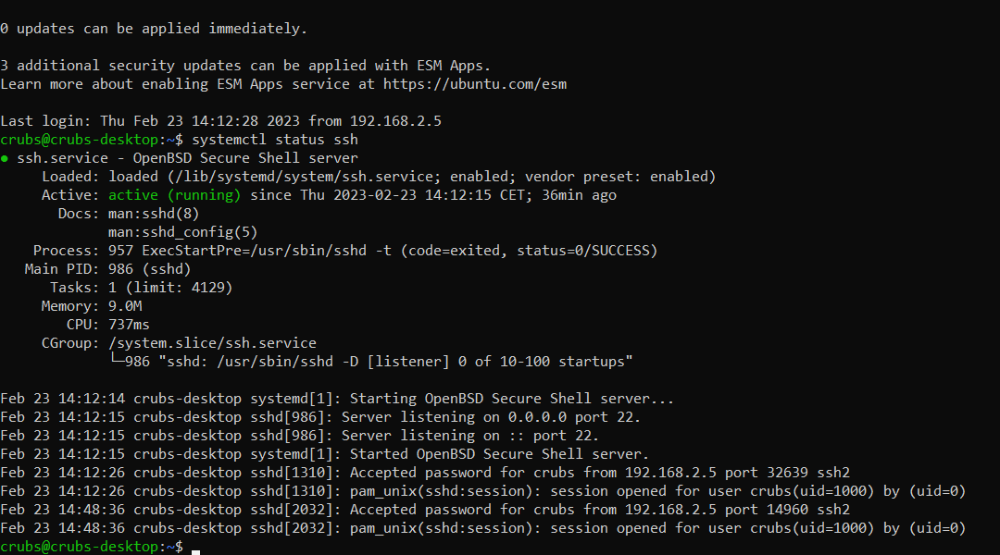
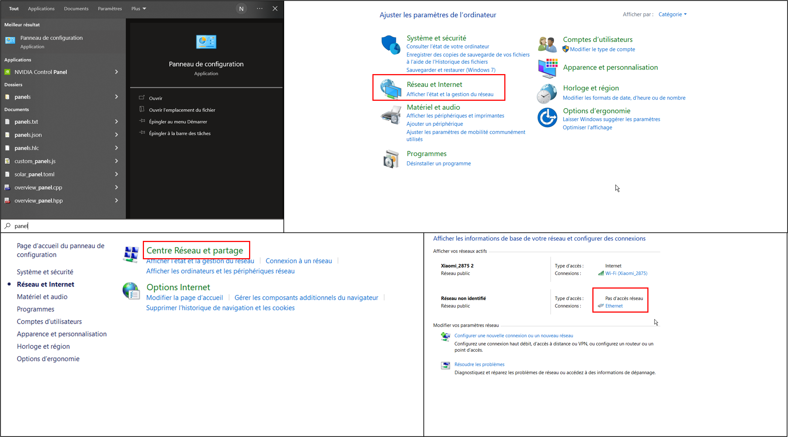
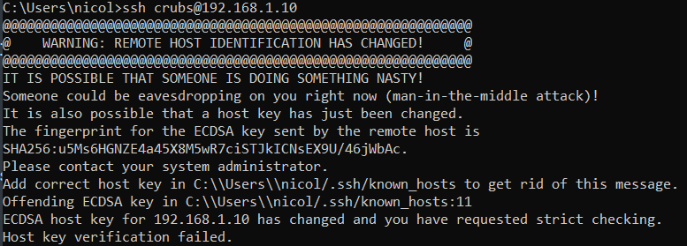

3.4.1. Introduction
Nous prevoyons d’utiliser ros2 donc beosin de ubuntu 22.04 LTS arm64 utilisation de pi4 4Go
3.4.2. Mises a jour
Je recommande d’utiliser l’interface graphqiue pour ces premieres etapes.
commencons par mettre a jour la pi
cd
sudo apt update
sudo apt-get update
sudo apt upgrade
sudo apt-get upgrade
ensuite il va falloir installer le service de ssh
sudo apt-get install openssh-client
sudo apt-get install openssh-server
sudo systemctl enable ssh
sudo systemctl start ssh
sudo systemctl status ssh
verifions que le service ssh c’est bien installer, vous devriez le voir actif comme ci dessous
{kind=link}
3.4.3. Hotspot WIFI et IP fixes
Nous allons maitenant configurer un hotspot wifi afin de se connecter sur la pi en ssh et de permetre aux robot et balises de communiquer sur un meme reseaux
installons les outils de reseaux qui ne sont pas encore present apres la mise a jour
sudo apt install network-manager
sudo apt install wpasupplicant
sudo apt install ifupdown
desactivation de cloud init
sudo bash -c "echo 'network: {config: disabled}' > /etc/cloud/cloud.cfg.d/99-disable-network-config.cfg"
Nous allons maintenant modifier le fichier de configuration du reseau, nous en profiterons pour ajouter des ip fixes pour faciliter les acces en ssh avec ces dernieres.
sudo nano /etc/netplan/*.yaml
puis rentrer le texte suivant en prenant sois de modifier « yourssid » et « yourpassword » par le nom du resau wifi et le mot de passe que vous voulez.
network:
version: 2
renderer: NetworkManager
ethernets:
eth0:
dhcp4: true
optional: true
addresses: [192.168.2.10/24]
wifis:
wlan0:
dhcp4: true
optional: true
addresses: [192.168.1.10/24]
access-points:
"yourssid":
password: "yourpassword"
mode: ap
rappel : ctrl + x puis y pour quitter le fichier
desactivons l’ipv6 qui ne nous sera pas necessaire, dans le fichier suivant:
sudo nano /etc/sysctl.conf
rajouter la ligne suivante a la fin du fichier :
net.ipv6.conf.all.disable_ipv6=1
Avant d’appliquer cette configuration nous devons imperativement oublier tout les reseaux wifi sur laquel la pi c’est connecter. en effet cette derniere ne peut pas emmetre de reseau en meme temps qu’elle est connecter a un autre
une fois les wifi oublier nous pouvons maintenant appliquer notre configuration et redemarer
sudo sysctl -p
sudo netplan generate
sudo netplan apply
sudo reboot
un reseau wifi devrais maitenant etre disponible des que la pi aura redemarer

noter que vous pourez toujours connecter la pi a un reseau wifi (par exmple pour l’installation de ros2) mais cette derniere ne pourra pas emmetre son reseau et il faudra penser a lui faire oublier la derniere connection wifi par securite
3.4.3.1. Commandes utiles
quelque commande utile concernant le wifi avec le terminal
desactivation et reactivation du hotspot
nmcli radio wwan off
lister les wifi disponible
nmcli dev wifi list
se connecter a un wifi
sudo nmcli dev wifi connect network-ssid password "network-password"
en remplacant network-ssid par le nom du wifi present dans la liste et « network-password » par le mot de passe (garder les « « )
pour oublier un reseau commencer par trouver votre reseau que vous voulez oublier dans la liste avec la commande suivante
nmcli -t -f TYPE,UUID,NAME con
vous devriez obtenir un resultat du genre : 802-11-wireless:12345678-31d1-51e7-a60e-3a52e52b4495:YourWifiName, copie la suite de chiffre et lettre pour l’ajouter dans la commande si dessous
sudo nmcli c delete choosedUUID
exemple : sudo nmcli c delete 12345678-31d1-51e7-a60e-3a52e52b4495
3.4.4. SSH
Pour ce connecter en ssh il faut utiliser la commande suivante sur votre pc:
ssh utilisateur@addressip
a partir de se que nous avons mit en place, nous avons donc:
3.4.4.1. wlan0
sur l’interface wlan0 apres s’etre connecter au reseaux wifi emit par la pi rentrer la commande suivante dans un terminal
ssh crubs@192.168.1.10
3.4.4.2. eth0
sur l’interface eth0 apres avoir connecter un cable ethernet:
Brancher le cable ethernet puis direction le panneau de controle windows (touche Win puis rechercher panel). Réseau et Internet > Centre de résau et partage > Ethernet > Propriete > cocher puis doucle cliquer Protocole Internet version 4 (TCP/IPv4)
{kind=link}

renseigner maintenant une addresse IP sur le meme reseau. ici par exemple 192.168.2.5 avec le meme masque 255.255.255.0. Je recommande vivement d’enlever ces changements des la manipulation fini. en effet vous risquez d’avoir de gros probleme des que vous vous connecterez a un autre reseaux ethernet
enfin vous pouvez retourner dans un terminal pour rentrer la commande suivante
ssh crubs@192.168.2.10
3.4.4.3. depanage
l’erreur ci dessous vous empechant de vous connecter en ssh peut subvenir sur votre pc.
{kind=link}
Rentrez simplement la commande suivante puis reessayer la connection ssh en acceptant le message avec y.
ssh-keygen -R 192.168.2.10
ssh-keygen -R 192.168.1.10
3.4.5. Fixer nom des ports USB
Afin de piloter le robot, deux cartes arduino sont utiliser se qui amene a un probleme d’identification de ces dernieres par les codes. en effet au demarage la pi attribues un nom de paripherique a chaque appareil en fonction de la vitesse de demarage des cartes, ce qui est aleatoire. nous devons donc faire en sorte d’attribuer un nom fixe en fonction de l’appereil connecter.
commecez par debrancher tout les paripherique de la pi et rallumer
pour tout cette serie d’etape nous devons passer en super utilisateur
sudo su -
brancher une premier carte puis identifier son nom actuel:
ls -l /dev/ttyACM*
une fois le port identifier, ici ttyACM1, nous devons recuperer les données de la carte
udevadm info --name=/dev/ttyACM0 --attribute-walk
reperer les premier idProduct et idVendor et noter les.
toujours en tant que super utilisateur nous devons creer une nouvelle regle
cd etc/udev/rules.d/
sudo nano 10-usb-serial.rules
ajouter la ligne suivante avec les parametre idVendor et idProduct obtenus
SUBSYSTEM=="tty", ATTRS{idVendor}=="2341", ATTRS{idProduct}=="0042", SYMLINK+="NouveauNom"
vous pouvez appliquer la regle fraichement creer avec la commande suivante mais je vous recommande de redemarer quand meme
sudo udevadm trigger
sudo reboot
apres redemarage vous pouvez verifier de la maniere suivante
ls -l /dev/NouveauNom
et vous devriez obtenir le resultat suivant
vous pouvez appliquer de nouveau la meme methode en changeant la carte a nommer et en suivant les etapes precedante tuto suivis : https://dominoc925.blogspot.com/2019/11/fix-usb-serial-adapters-to-static.html
3.4.6. ROS2 au demarrage
Afin de lancer le middleware ROS2 au demarrage de la PI il est necessaire d’ecrire plusieurs fichier :
On commence par creer un executable comportant les commandes a executer pour demarrer le robot
sudo nano /usr/bin/ros2_launch_script.sh
puis on y ajoute les lignes suivante :
#!/bin/bash
source /opt/ros/humble/setup.bash
source /home/crubs/Documents/Robot2/install/setup.bash
ros2 launch ldlidar_stl_ros2 ld06.launch.py & ros2 launch robot_bringup lancement.launch.py
noté qu’ici on lance le launch lancement.launch.py et ld06.launch.py, cette ligne est a adapter celon les besoins.
Enfin on creer un service nommé « ros2_launch » qui lancera le precedant executable creer
sudo nano /etc/systemd/system/ros2_launch.service
et on y ajoute les lignes suivantes :
[Unit]
Description=ROS2 Launch Service
After=network.target
[Service]
ExecStart=/usr/bin/ros2_launch_script.sh
User=crubs
Group=crubs
[Install]
WantedBy=multi-user.target